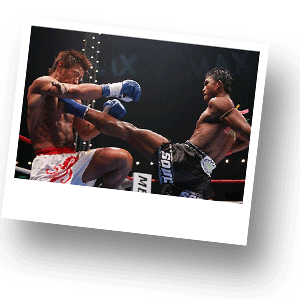
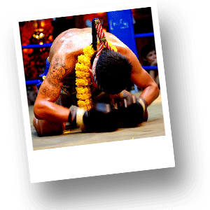

Тайскй бокс - Муай Тай

В Таиланде искусство Муай Тай (Тайский бокс), включает в себя боевые элементы и элементы древних ритуалов. Тайский бокс представляет смесь традиционного бокса с такими восточными боевыми искусствами, как каратэ и таэквондо. Боксеры могут пускать в ход кулаки, локти, колени и ступни для нанесения ударов своему противнику практически во все части тела, куда только предоставится возможность. Наблюдая за ходом современного боя, Вы вряд ли поверите в то, что когда-то он мог быть еще более жестоким и свирепым.
До 1930-х гг. правила и положения, регулирующие Муай Тай, были очень скудными. А серьезные травмы и ранения были обычным явлением для боксеров, практиковавших такие способы ведения боя, как царапанье, удушение и плевки в противника. В 1920-е годы этот вид спорта был даже запрещен и возродился только в 1930-е годы, после принятия ряда ограничительных правил. О начале матча извещает резкая музыка. Бойцы выходят на ринг в цветных повязках на голове и на рукавах. Считается, что повязки освящают действия борца и охраняют его. Перед началом первого раунда оба спортсмена читают ритуальные молитвы, поочередно поворачиваясь лицом в направлении места своего рождения, а затем четырех сторон света.

Они призывают на помощь духов-покровителей и тени давно умерших великих боксеров. Боксеры встают на колени и исполняют молитву, затем под музыку они передвигаются вокруг ринга в гипнотизирующем танце "Рам муэй". Это танец в медленном темпе c подчеркнутыми движениями. В традиционном тайском боксе танец служит способом высказывания участниками боя уважения тренеру и боксерской школе, к которой каждый из них принадлежит. После исполнения "Рам муэй" боксеры снимают повязки с головы. Нарукавную повязку, со спрятанным в ней небольшим амулетом с Буддой, они не снимают до конца боя. Музыка сопровождает все пять трехминутных раундов. Она усиливаются или ослабевают в соответствии с действием на ринге.
Надо отметить, что реальные корни происхождения Муай Тай, вероятно, никогда не будут найдены, поскольку большая часть исторических записей исчезла навсегда в 1767 г., когда бирманские войска сравняли с землей древнюю столицу сиамского королевства — Аюттхаю.